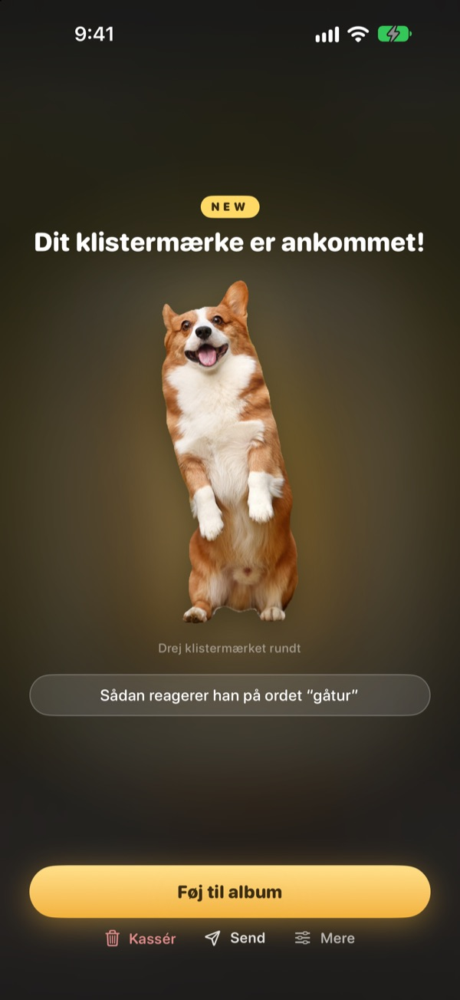
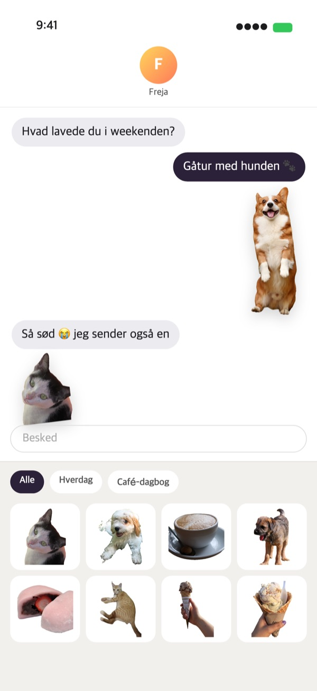
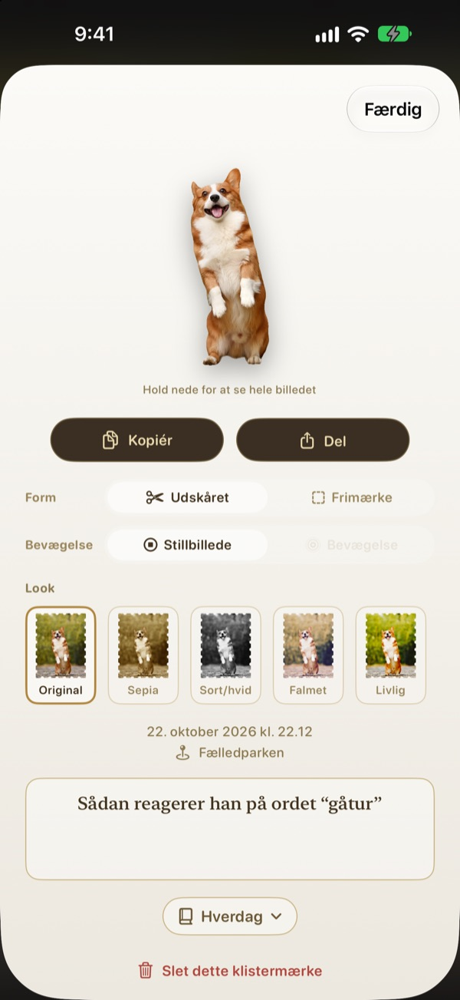
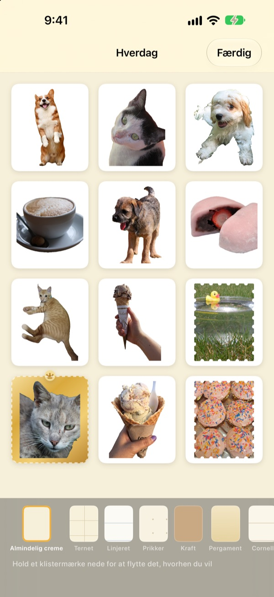

Hold nede.
Øjeblikket er et klistermærke.
Sæt scenen ind i hullerens vindue, hold nede, og slip. Din hund bliver skåret ud efter sin egen form, med et kort glimt af bevægelse fra lige før og efter trykket. Send den med det samme fra Beskeder eller tastaturet.
Alle funktioner er gratis. Klistermærker og fotos bliver på din enhed.

Prøv selv
Vælg en scene, hold hullerknappen nede, og slip. Prøv bagefter en anden form og et andet look.
De bedste øjeblikke går i dvale i Fotos
Du fanger hunden i det sekund, den rækker tunge. Men skal det være et klistermærke, må du finde billedet, skære det ud og åbne endnu en klistermærke-app. Imens er samtalen for længst gået videre. Punching river klistermærket af lige der, hvor du tager billedet, og så snart du lægger det i et album, ligger det i klistermærkeskuffen i Beskeder.
Motiver skæres ud, landskaber bliver frimærker
Er der noget at skære ud, som et menneske, et kæledyr eller en ting, får du lige præcis det. Er der ikke, som i et landskab, rives det af som et frimærke med takket kant.
Et kort øjebliks bevægelse fra omkring trykket kommer med, så klistermærket bevæger sig.

Direkte i Beskeder og på tastaturet
Afrevne klistermærker dukker op i klistermærkeskuffen i Beskeder. Slå Punching-tastaturet til, så kan du også vælge og indsætte dem i andre apps.
Bevægelige klistermærker kommer frem i bevægelse. Hold et klistermærke nede for at kopiere det, og indsæt det, hvor du vil.

Form og look, også bagefter
Skift mellem udskåret og frimærke, mellem bevægelse og stillbillede, når du vil. Det originale foto gemmes, så alt forbliver lige så skarpt som første gang, uanset hvor tit du skifter.
Vælg et look blandt Original, Sepia, Sort/hvid, Falmet, Livlig og Cyan, og tilføj et par ord, datoen og stedet.

Saml i album, print på papir
Lav et album til hvert tema, så kan du også vælge album for album i Beskeder og på tastaturet. Vælg sider som kraft, ternet, linjeret eller pergament, og læg klistermærkerne i den rækkefølge, du vil.
Gør et album til en PDF til print med skærelinjer i frimærkeform, og print den direkte på klistermærkepapir.

Kom i gang på tre trin
- 1
Sigt
Placér det, du vil fange, i vinduet midt i kameraet.
- 2
Hold nede og slip
Klistermærket rives af i det øjeblik, du slipper.
- 3
Gem og send
Læg det i et album, så er det klar i Beskeder og på tastaturet.
Hvor du bruger det, og hvor du ændrer det
- Beskeder
- ＋ ved siden af tekstfeltet ▸ Klistermærker ▸ Punching-klistermærker
- Andre apps
- Slå Punching-tastaturet til, skift til det med globustasten, vælg og indsæt
- Overalt
- Hold et klistermærke nede, kopiér det, og indsæt
- Papirklistermærker
- ⋯ i et album ▸ Brug ▸ Ark med klistermærker til print (PDF)
- Sider og rækkefølge
- ⋯ i et album ▸ Pynt frit
- Ældre fotos
- Importér fra Fotos i et album
- Første form
- Indstillinger ▸ Riv af ▸ Standardform
- Se bevægelse
- Indstillinger ▸ Visning ▸ Afspil bevægelse automatisk
- Hurtig start
- Åbn Punching-kamera i Genveje eller Kontrolcenter
Indstillinger finder du under tandhjulet øverst til højre i kameraet.
Ofte stillede spørgsmål
Mit klistermærke bevæger sig ikke.
Gå til Indstillinger ▸ Visning øverst til højre i kameraet, og tjek, at Afspil bevægelse automatisk er slået til. Tryk derefter på klistermærket, og tjek, at Bevægelse er slået til under Form. Bevægelsen optages altid, så du kan slå den til når som helst. Fotos importeret fra Fotos-appen er et enkelt billede og bevæger sig derfor ikke.
Jeg fik et frimærke i stedet for et udskåret klistermærke.
Scener uden noget at skære ud, som et landskab, rives automatisk af som et frimærke. Tryk på klistermærket for at ændre det under Form når som helst. Vil du have frimærker fra starten, så skift Indstillinger ▸ Riv af ▸ Standardform.
Jeg kan ikke se mine klistermærker i Beskeder.
I Beskeder trykker du på ＋ ved siden af tekstfeltet ▸ Klistermærker og finder Punching-klistermærker. De dukker op, når du har revet mindst ét klistermærke af i Punching, og har du flere album, kan du bladre album for album. Du finder en trin-for-trin-vejledning i Indstillinger ▸ Brug ▸ Brug i Beskeder og på tastaturet.
Hvordan slår jeg tastaturet til?
Tryk på Åbn Indstillinger under Indstillinger ▸ Brug ▸ Brug i Beskeder og på tastaturet, og slå Tastaturer ▸ Punching-klistermærker til. For at indsætte klistermærker kræves Tillad fuld adgang, men tastaturet læser eller sender aldrig det, du skriver, og går aldrig på internettet. Tryk derefter på globustasten i en hvilken som helst app for at skifte til Punching-klistermærker.
Kan jeg printe rigtige klistermærker?
Tryk på ⋯ øverst til højre i et album ▸ Brug ▸ Ark med klistermærker til print (PDF). Du får en PDF på 300 dpi til hele albummet med skærelinjer i frimærkeform, klar til klistermærkepapir i printeren derhjemme eller hos et trykkeri. Printguide i samme menu tager dig igennem det trin for trin.
Hvor blev mine gamle samlinger af?
Fra og med 1.0.1 samles klistermærker kun på én måde: i album. Hver samling blev til et album med samme navn, og klistermærker, sider og rækkefølge blev flyttet med, som de var.
Der lyser et grønt lys i statuslinjen.
Det er kameraindikatoren i iOS. Den lyser kun, mens kameraskærmen vises. Når du åbner et album, stopper kameraet, og lyset slukker.
Hvad sker der, når jeg sletter et klistermærke?
Klistermærket, det originale foto og bevægelsesdataene slettes permanent fra din enhed og forsvinder også fra klistermærkeskuffen i Beskeder. Det kan ikke gendannes, så tænk dig om, før du sletter.
Hvor gemmes mine fotos og klistermærker?
Kun på din enhed. Der er ingen konto, ingen egen server og ingen reklamer. Det eneste, der forlader din enhed, er anonym brugsstatistik, fejlrapporter og feedback, du selv sender. Du kan læse mere i privatlivspolitikken.
Er det virkelig gratis?
Ja, alle funktioner er gratis. Kan du lide appen, kan du give udvikleren drikkepenge i appen, men drikkepenge låser ikke op for noget.
Spørgsmål eller feedback? Skriv til leeo@kakao.com. Vi svarer normalt inden for 2–3 dage. Fejl og idéer til funktioner kan du også melde på GitHub under M1zz/StampCamera.